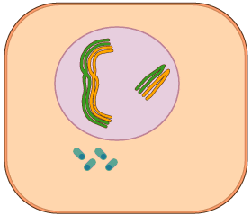

~ Meiosis ~
Often, people get confused between meiosis and mitosis but they are very different processes.
Mitosis is the replication of cells to replace, to grow or to repair but meiosis is to produce reproductive cells.
Meiosis on the other hand is to produce gametes, reproductive cells (sprem cells and eggs).
Instead of having the same amount of chromosomes as the starting, the sex cells will have half of it.
Meiosis is divided in 2 parts: Meiosis I and Meiosis II and each divided into prophase, metaphase, anaphase and telophase.

Meiosis I

Before going into meiosis, the cell has to go through interphase first. In G1, the cell grows. In S phase, the DNA is replicated, and in G2 the cell grows again and prepares for prophase I.
· Prophase I
In Prophase I, the chromosomes become visible after the nucleus disappears. They pair up with their homologue and held together by a protein structure called synaptonemal complex. Then, they cross-over, meaning that they exchange genes to create variety between the cells. For example, if cells A and B are homologous, they exchange genes. Some genes of A will be in B an vice versa. Asters and spindle fibers form.
· Metaphase I
In Metaphase I, the chromosomes group together in tetrads and align along the equator of the cell. The spindle fibers attach to them by the centromere.
· Anaphase I
In Anaphase I, the sister chromatids stay together and each one from the tetrads groups all pulled towards the opposite ends of the cell.
· Telophase I
In Telophase I, the chromosomes are positioned respectively at the poles of the cell. The spindle fibers and the asters disappear. The nucleus is reforming around the chromosomes while these are uncoiling and slowly turning into chromatin. The cell pinches in the middle and after cytokinesis is done, we have two cells.
Meiosis II

· Prophase II
In Prophase II, the nucleus vanishes and the centrioles start to move towards the opposite poles. Asters and spindle fibers are forming and the chromosomes are visible.
· Metaphase II
In Metaphase II, the chromosomes line up on the equator and the spindle fibers attach to their centromeres.
· Anaphase II
In Anaphase II, the sister chromatids are separated and pulled to opposite poles of the cell.
· Telophase II
In Telophase II, the same thing happens as in Telophase I. The nucleus reappears and the spindle fibers and asters vanish. The end result are haploid cells which means the they have half the amount of chromosomes of the starting cells.